Throughout my career, I've used visual communication to help learners make sense of complex ideas more quickly and confidently. Whether supporting AI enablement, cybersecurity, healthcare, technical education, or leadership development, thoughtfully designed graphics can reduce cognitive load, reinforce key concepts, and make information easier to understand and remember.
Rather than treating graphics as decorative elements, I approach them as instructional tools that clarify relationships, simplify processes, highlight decision points, and strengthen mental models. These visuals have been used within eLearning, instructor-led training, performance support, presentations, knowledge systems, and enterprise communications to improve understanding and support real-world performance.
The examples below represent a selection of instructional graphics, diagrams, process visualizations, infographics, and supporting visual assets created across a variety of enterprise learning initiatives. Together, they demonstrate how visual design can transform complex information into clear, practical, and actionable learning experiences.
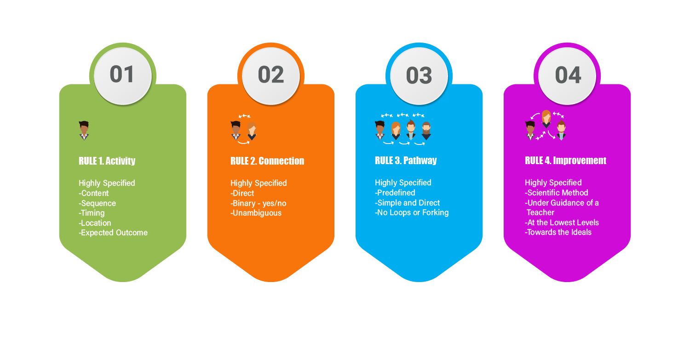
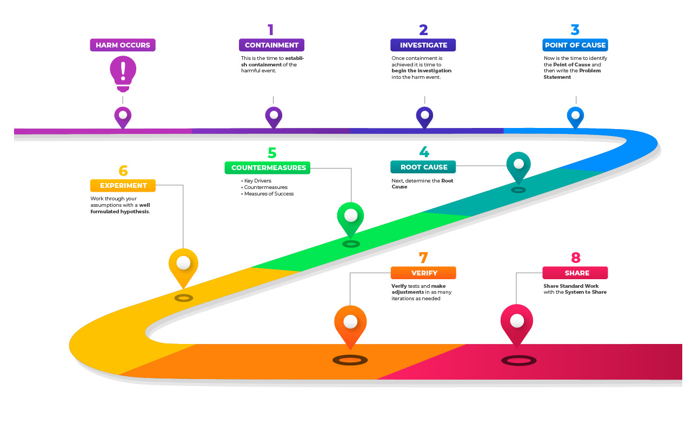
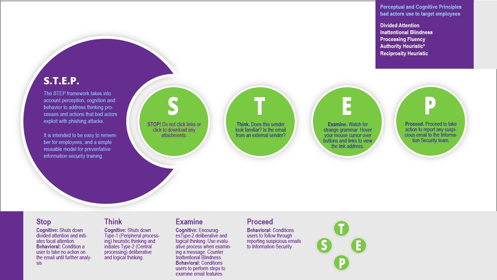
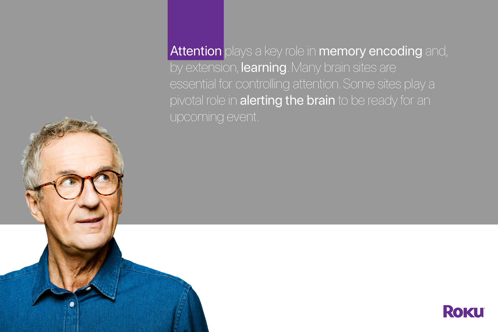
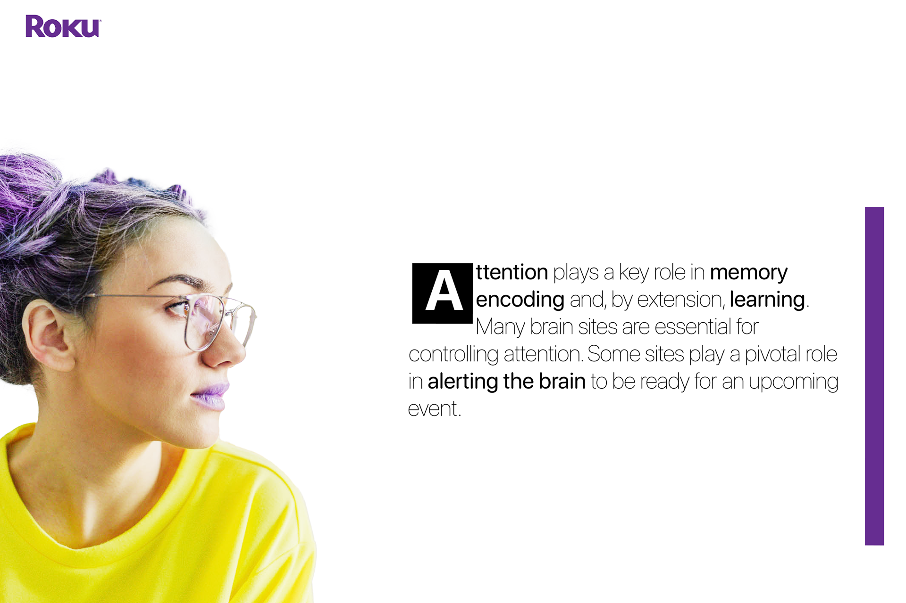
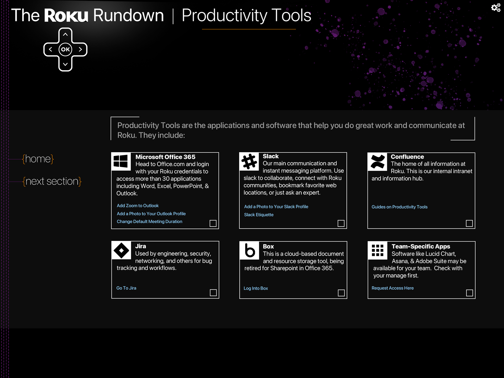
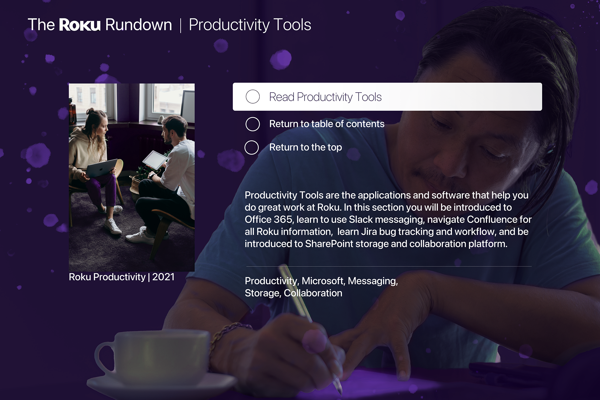
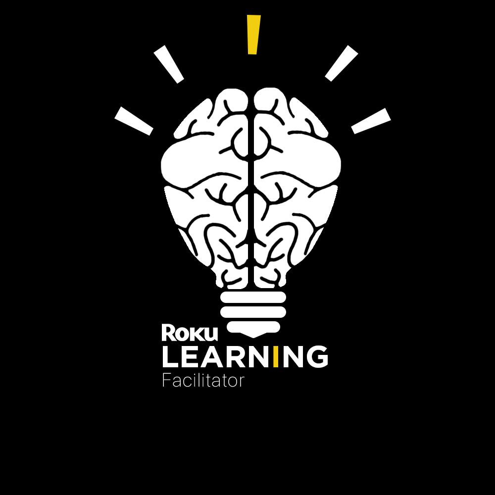
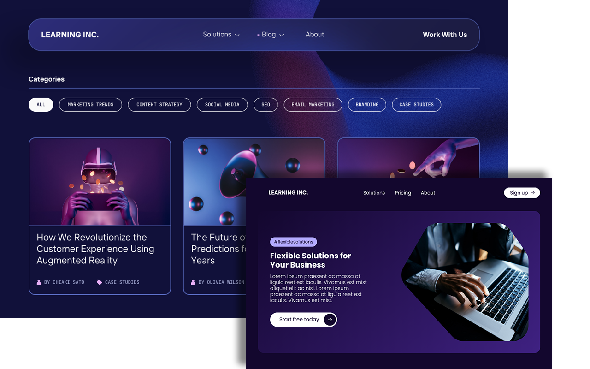
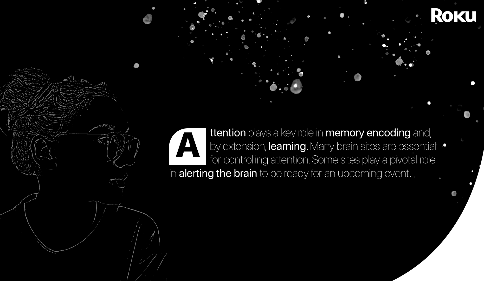
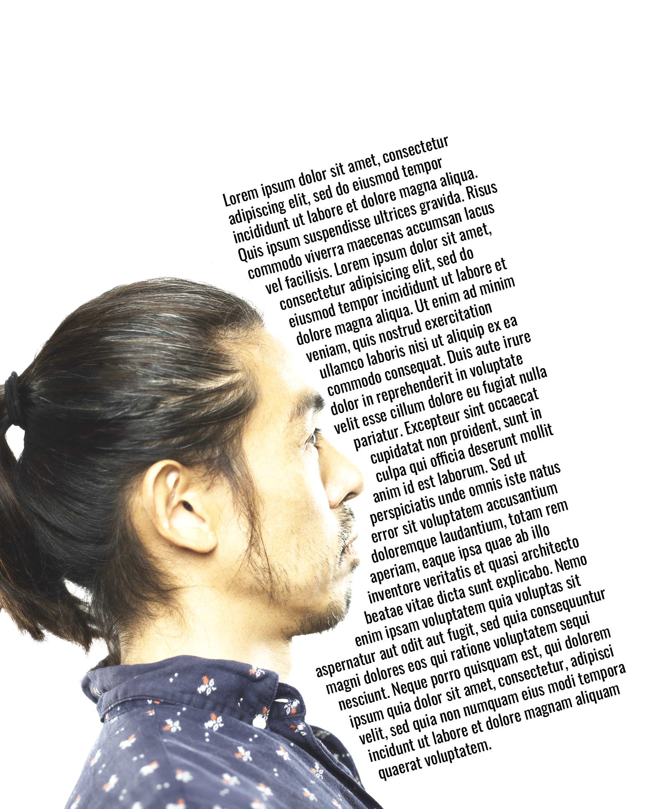
Related Case Study
Enterprise AI Learning Ecosystem
Employees needed practical AI fluency as tools and workflows evolved faster than formal learning structures.